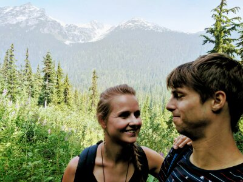

Twee koppen, twee helmen, één goede haardag (die van niemand).

Iemand vond dit duidelijk het grappigste moment ooit.

De ene poseert romantisch, de andere zingt blijkbaar opera.

Toen we nog niet wisten hoe een selfie precies werkt.

De echte liefde van haar leven, vastgehouden met beide handen.

Even doen alsof we in een reclame voor wijn zitten. Knepen het er goed uit.

Dat moment waarop je elkaar diep aankijkt en allebei "honger?" denkt.